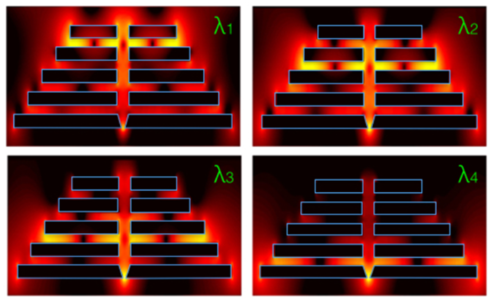

PhD Student, Stanford University
Dielectric laser accelerators (DLAs) currently use free-space laser beams focused on dielectric microstructures to perform acceleration of charged particles [1-4]. While this method can generate energy gain per length that is 2 orders of magnitude higher than conventional accelerators, it is experimentally difficult to scale the interaction length to achieve a sizable total energy gain. I am currently working to replace these free-space techniques with chip-based methods to deliver high peak power, ultra-fast (fs) laser pulses to dielectric laser accelerator structures. The main advantage would be to shift the burden from off-chip experimental techniques to chip-integrated integrated control methods, potentially allowing for orders of magnitude increases in the amount of acceleration length achievable with DLA. Specifically, we propose a tree-branch dielectric waveguide geometry for splitting the optical power to spread over an extended area while inducing the optimal group delay and phase control necessary for acceleration. With detailed numerical modeling of the individual components along with specific parameter studies, we show that this method may be able to greatly scale DLA technology.
Paper (in preparation)
Dielectric microstructures, when illuminated by lasers, may generate electric field distributions that may be used to accelerate charged particles. Usually, simple shapes such as pillars [1] or gratings [2] are used to accomplish this, althogh it was not clear whether one could do much better with other geometries. Instead, I worked out an optimization method for iteratively designing the dielectric structures used in DLA technology. Starting with an all vacuum system, each iteration starts with using AVM to compute the gradient of the objective function (accelerator energy gain per length) with respect to each pixel in the simulation space. Then, each pixel value is perturbed slightly in the direction that maximizes my objective. After a few hundred iterations, completely novel structures are generated, which have large feature sizes, intuitive designs, and acceleration gradients that are almost three times those demonstrated based on previous geometries.
Metallic nanostructures can generate sizable electric field enhancements when illuminated by visible and near infrared light. Several works use these fields to perform single-molecule fluorescence and surface-enhanced-Raman scattering (SERS) experiments [1]. I designed a metallic nanostructure that is capable of achieving field enhancement at the same spatial location for several tunable frequencies. This may be useful for generating spectral fingerprint information from a molecule, for instance. The metallic structure can be approximately represented by an electrical circuit using established equivalent circuit models for plamsonic (metal-optic) systems [2]. This technique allows us to intuitively describe the workings of this structure, showing that it can selectively funnel light from spatially separate resonances to a single common location.
With the recent advent of research in 1D materials, such as graphene and molybdenum disulfide, there is significant interest in understanding the characteristics of electron flow between these materials and traditional metal electrodes. As a rotation student with Prof. Evan Reed, I used density functional theory (DFT) simulations to model the electron flow between electrically biased graphene monolayers. I came up with some rough estimations of the molecular conductivity based on a simple linearized model based on a microscopic Ohm’s law treatment of the system.
Electromagnetically trapped ions can be used to do quantum information processing under certain conditions [1]. When I was in Singapore, I worked on designing two-dimensional, chip-based Barium ion traps. I spend my other time aiding in assembling the vacuum chamber for other experiments, developing electronics, and looking into methods for generating a cloud of Barium ions in-situ via laser ablation of a Barium sample.
III-V materials, such as GaAs, have favorable opto-electronic properties that make them ideal for use in solar cells, LEDs, and photodetectors. However, these materials are prohibitively expensive in practice. As an undergraduate, I aided in developing a technique to dramatically reduce the cost of these devices by substrate reuse. First, the devices are grown on a substrate using molecular beam epitaxy (MBE) along with a ‘protection layer’. This protection layer is then etched, allowing us to lift-off the device for further fabrication. With a novel chemo-mechanical polishing technique, we are able to indefinitely reuse the substrate to grow more devices, which significantly reduces the fabrication costs. In a separate work, our resulting lightweight photovoltaic devices were demonstrated as a power source for a flying robotic drone.